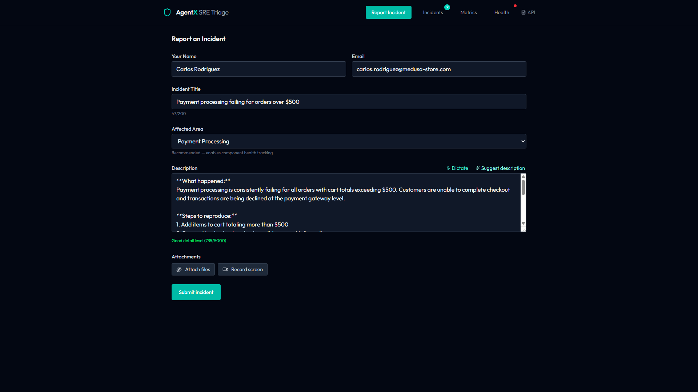
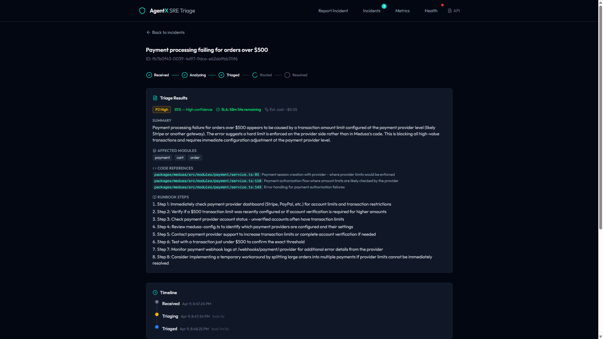
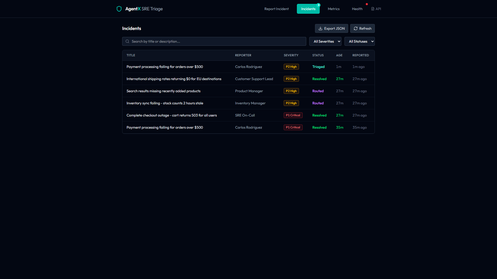
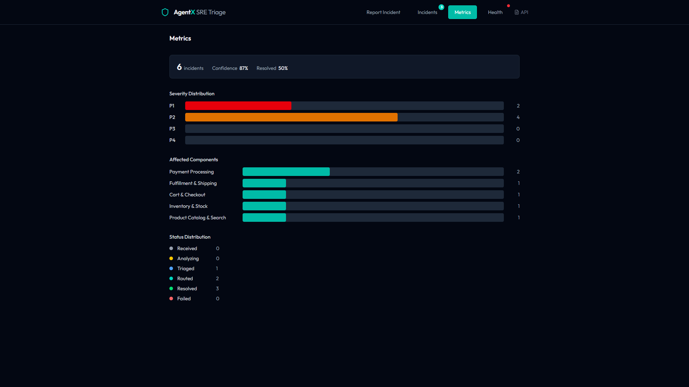
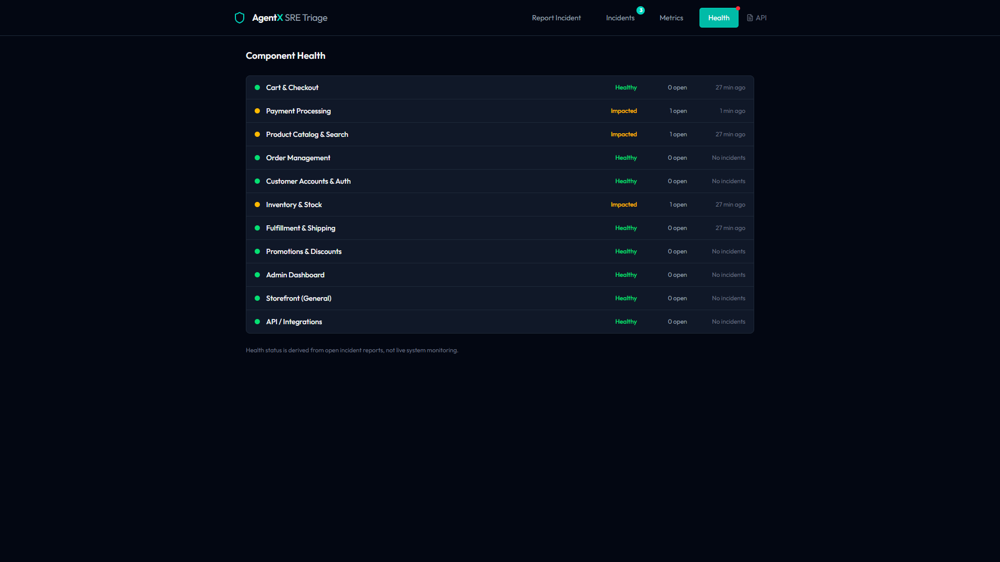
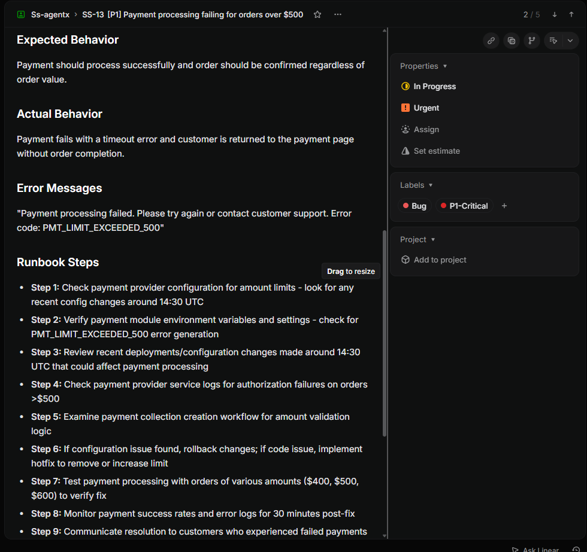
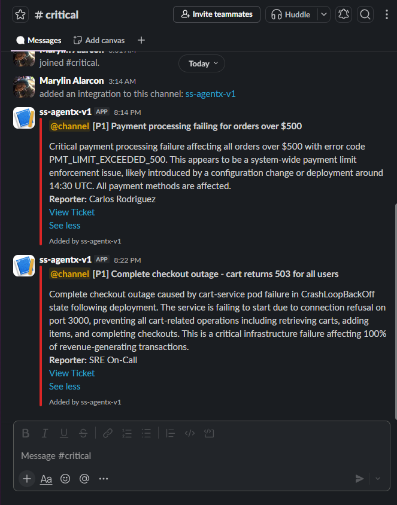
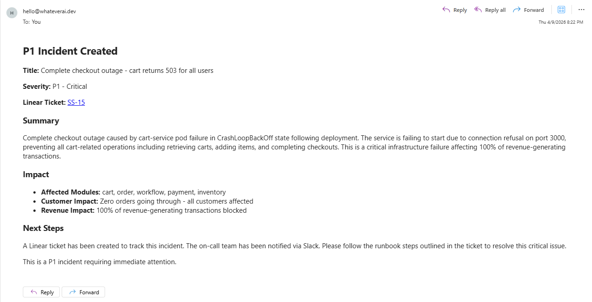
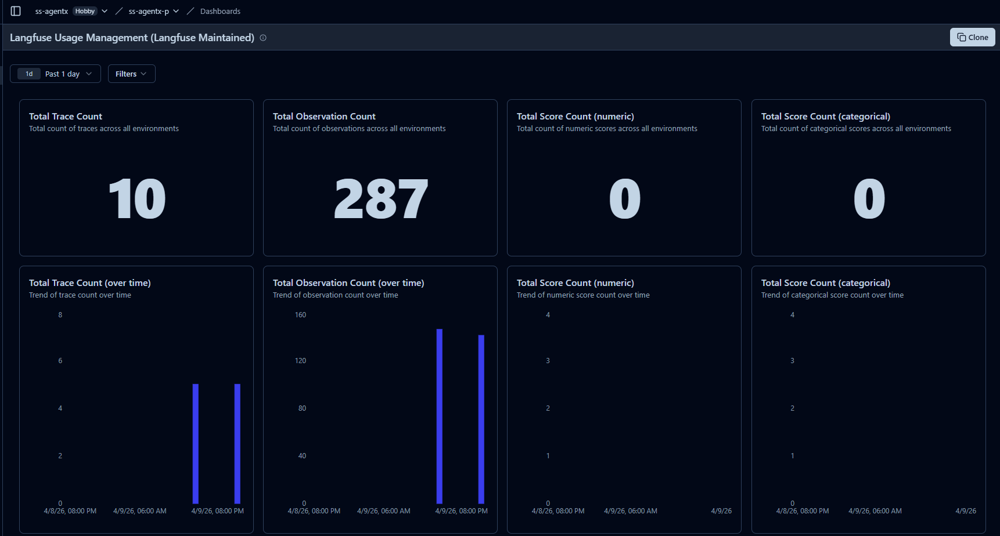

SRE Incident Triage in 90 Seconds
3-agent pipeline · Codebase-aware · Fully automated routing
02 — The Problem
2.5 hrs / day
15–30 min × 5 incidents = wasted engineering time
Reading logs
Sifting through 100s of log lines to find the root cause
Writing tickets
Manually crafting Linear issues with severity, labels, assignment
Pinging Slack
Finding the right channel, tagging the right people at 3 AM
03 — The Solution
Report an incident → get a triaged, routed, and tracked issue in 90 seconds. Fully autonomous.
Intake Agent
Multimodal extraction
Text, images, logs, video
Triage Agent
Codebase analysis
6 investigation tools
Router Agent
Linear, Slack, Email
Priority-based routing
04 — Agent 1
Multimodal extraction — understands text, images, logs, and screen recordings
Text Description
Free-form incident descriptions parsed into structured format
Screenshot Analysis
Claude Vision extracts error messages, stack traces, UI state
Log Parsing
Structured extraction from raw log dumps and stack traces
Screen Recordings
Browser-recorded sessions analyzed for reproduction steps
Input → Output
Claude 4 Sonnet
Multimodal processing + structured extraction
05 — Agent 2
Codebase-aware analysis — investigates like an SRE, not just an LLM
module_search
Find relevant source files by component or keyword
code_reader
Read source files and understand implementation details
error_patterns
Match error signatures against known pattern database
dependency_graph
Trace module dependencies to assess blast radius
config_analysis
Check environment configs, feature flags, rate limits
doc_lookup
Search knowledge base for known issues and solutions
Query
Structured incident
Agentic Loop
Tool calls (avg 4-6)
Output
Severity + Root cause + Fix suggestion
06 — Agent 3
Priority-based routing to the right people, on the right channel, at the right urgency
| Severity | Linear Priority | Slack | |
|---|---|---|---|
| P1 Critical | Urgent | #incidents @channel | Team lead + on-call |
| P2 High | High | #incidents @channel | Team lead |
| P3 Medium | Medium | #incidents | — |
| P4 Low | Low | — | — |
07 — Architecture
React + Vite
Tailwind · TypeScript
5 views
FastAPI
Python 3.12
REST + SSE
3 Agents
Anthropic SDK · Claude 4 Sonnet
Tool-use pattern
Integrations
Linear · Slack · Resend
4 services
State Machine
08 — Security
Defense in depth — every layer independently prevents a class of attacks
Input Validation
Prompt Injection Defense
Tool Allowlisting
Data Protection
09 — Observability
Full pipeline visibility with Langfuse + structured JSON logging
Langfuse Traces
Per-incident trace with nested spans for each agent, tool call, and LLM invocation
Structured Logging
JSON logs with incident_id, agent, tool, duration, and severity context on every line
Live Metrics
Avg triage time, cost per incident, token usage, severity distribution — all in the dashboard
// Example Langfuse trace structure
10 — Live Demo
Live at ssagentx.up.railway.app
Click any screenshot to enlarge
Frontend — 5 Views

Report Form

Triage Results

Incidents List

Metrics

Health Grid
Integration Proof — Real APIs, Real Data

Linear Ticket

Slack Alert

Email (Resend)

Langfuse Traces
11 — By the Numbers
~90s
End-to-end pipeline
Report → Triage → Route
$0.08
Avg cost per incident
Claude Sonnet · $0.04–0.12 range
62
Automated tests
Unit + integration · pytest
3
Specialized agents
Intake · Triage · Router
4
Real integrations
Linear · Slack · Resend · Langfuse
6
Investigation tools
Codebase-aware triage
Because your on-call deserves to sleep.